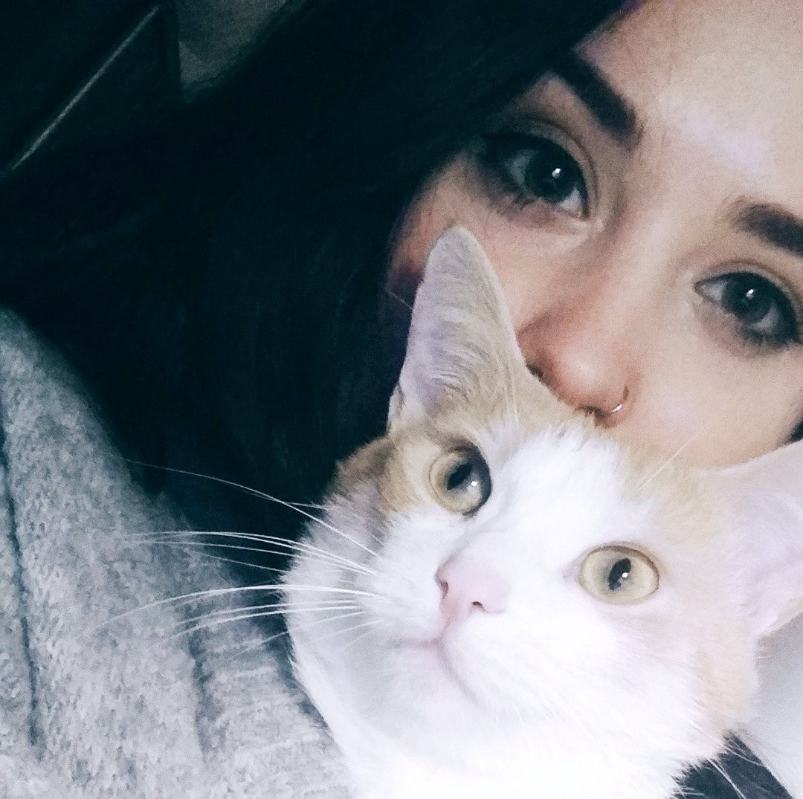

 Katarzyna Kanarszczuk Junior Frontend Developer Programistka z kilkumiesięcznym doświadczeniem. Pracuję w Polskim Radiu. jako wsparcie programistyczne oraz w Linecode, jako administrator witryn internetowych. W sieci: Facebook, GitHub, Instagram.